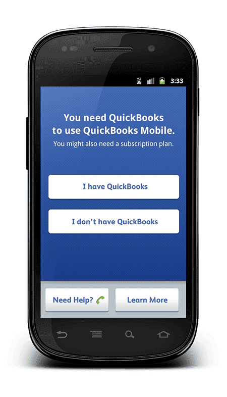
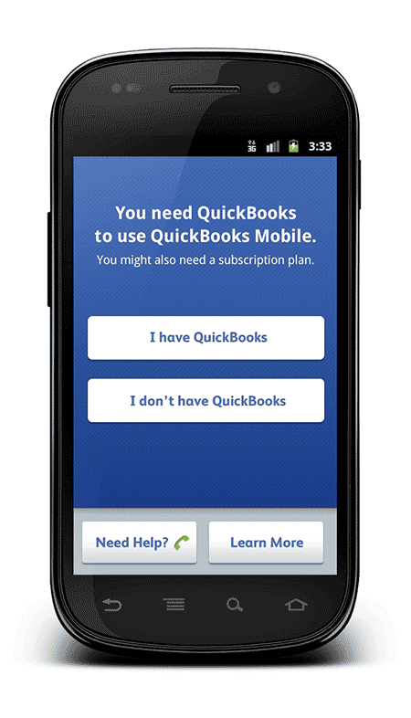

A few months after I started working on QuickBooks Mobile for Android, I got the chance to redesign the signed-out experience. There hadn’t been a designer on the project for most of the time it was in development, so no one had ever really considered what it was like for new users to download the app, try to sign in, and poke around to see what it did. We’d been so focused on what went on after sign-in, we didn't realize how many customers were getting confused and giving up.
 

The redesigned first-time use experience
The redesign was inspired by a proposal from one of our engineers to improve the loading screen. The existing loading screen showed a static message and a spinner, and the spinner spun until a user’s entire data file downloaded. It also spun when something went wrong and the process got stuck, but there was no way to tell the difference. When I started to consider the loading screen, I realized the sign in screen also needed work.
Before: users were having trouble signing in, and the loading screen didn’t show any progress
I wanted to propose expanding the loading screen project to include sign in, so I grabbed our product manager after a meeting and drew it out. He thought it was a good idea and backed it up with interesting data: only 56-68% of people who downloaded our app had credentials that entitled them to use it. Everyone else was either confused or just trying to learn more.
Once we had a general idea of our goals for the project, I started sketching to get the conversation going. At first, I thought the QuickBooks wizard was too complicated and left it out, but we added it back later based on feedback from other product teams.
Probably our biggest victory was getting a single phone number for customers to call for help (previously, it was one per flavor of QuickBooks). Having to call for help was still less than ideal, but it was the best option we had available.
Wireframes for sign in, tips, and the wizard
I thought the signed-out part of the app should behave something like packaging, a little shiny and fairly simple. There was no defined QuickBooks brand at the time, so I referenced the Intuit brand for colors and type and then added texture and a little depth.
Final visual design
Despite being the first big UI story I designed for QuickBooks Mobile, this was one of the most successful. We had clear metrics going into it, so we were able to see the impact it had after a few months. Log in errors went down by 21%, which meant users were entering the right credentials more often or trying the wrong credentials less often. We also increased engagement with the app before sign in by 25%. And by adding a way to sign up for a QuickBooks Online trial directly in the app, we actually increased trial sign ups from any source by 50%.
{kind=link}
{kind=link}
{kind=link}
{kind=link}
{kind=link}
{kind=link}
{kind=link}
{kind=link}
{kind=link}